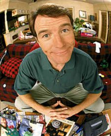

Hal - Bryan Cranston
Full Name: Bryan Cranston
Born: 7 March 1956, San Fernando Valley, California, USA
Family: Wife (Robin Dearden), and daughter (Taylor).
Movies/T.V shows Bryan has been on:
Film
The Big
Thing (2000)
Terror Tract (2000)
Last Chance (1999)
Street Corner Justice (1996)
That Thing You Do! (1996)
Armitage III (V) (1994)
Erotique (1994)
Dead Space (1991)
The Big Turnaround (1988)
Television
Clerks:
The Animated Series ( 2000)
From the Earth to the Moon (1998)
The King of Queens: "Time Share," “Dog Days” (1999)
The Rockford Files: Crime and Punishment (1996)
Chicago Hope: “Tantric Turkey” (1998)
The X-Files: "Drive" (1998)
Dead Silence (1991)
Seinfeld, (1990)
Babylon 5: "The Long Night" (1997)
The Louie Show (1996)
Land's End (1995)
Touched by an Angel: "The Hero" (1995)
Walker, Texas Ranger:"Deadly Vision" (1994)
Baywatch: "Cruise Ship" (1989)
I Know My First Name Is Steven (1989)
The Return of the Six-Million-Dollar Man and the Bionic Woman
(1987)
Matlock: "The Gift" (1986)
Murder, She Wrote: "Menace, Anyone?" (1986)
Loving, Doug Donovan (#1) - 1983-1984
CHiPs: "Return to Death's Door"
Created by Michelle!
Home | Photos | Cast Bio's | Links | Quotes